Alexa 快速接入Esp8266使用SinricPro框架
最近终于有点空闲时间了，从家里翻出来一个19年闲鱼二手捡回来的Amazon Alexa Echo Dot 智能音响，打算好好研究一下用途。不过这玩意真实离谱，我当初买的时候才50块出头，现在二手竟然还反涨到70~80块了，魔幻啊，虽然它白色款确实挺好看的，但我还是选择天猫精灵刻晴限定版
这一期就简单的演示用Alexa控制Esp8266的小例程，就不展开细说了（毕竟天猫精灵他不香吗）
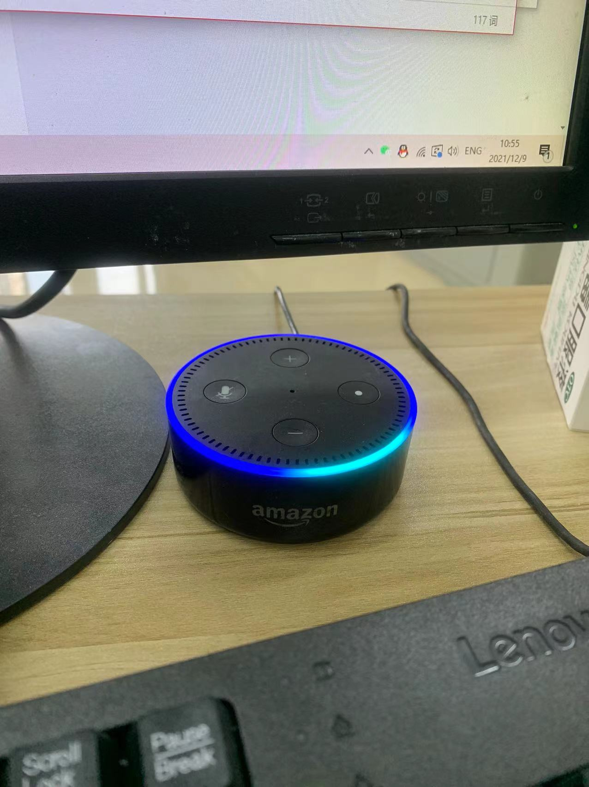简单配置下Alexa
前期准备步骤，就是让Alexa连上网可以参照这个教程
(32 封私信 / 80 条消息) amazon alexa echo dot设置？ - 知乎 (zhihu.com)
因为我比较嫌麻烦，网络上有现成的能用则用。值得注意的是最好使用火狐或者苹果的Safari浏览器(网页端的)来配置，不知道为啥我用Edge配置不了，麻木了。还有Alexa app 安卓版的不知道为啥打开app后会报错闪退，我很苦恼，换了梯子也上不去，没办法只好用美区的App store 下载了Alexa 的ios软件，这次倒是没出什么问题。
配置完成后，我们要给Alexa添加Skill。打开到Alexa的软件，找到 Skills & Games 选项进入
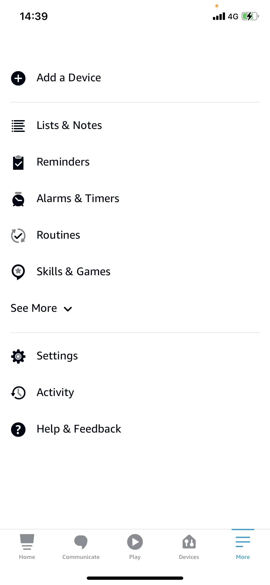搜索 Sinric Pro
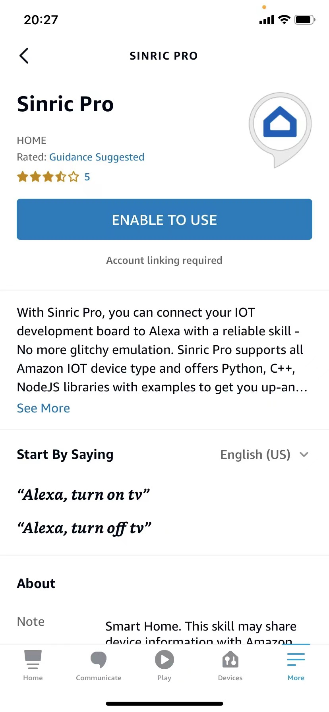就只有一个按钮，点吧，反正你也点不了其他地方啊
添加Skill的时候他会弹出页面让你绑定Sinric Pro账号，我忘记讲了，还要注册一个账号来着，尴尬
这个文档是全英文的，我建议你手动开一下网页翻译啊，这样会舒服很多，跟着它的步骤注册个账号就好了。
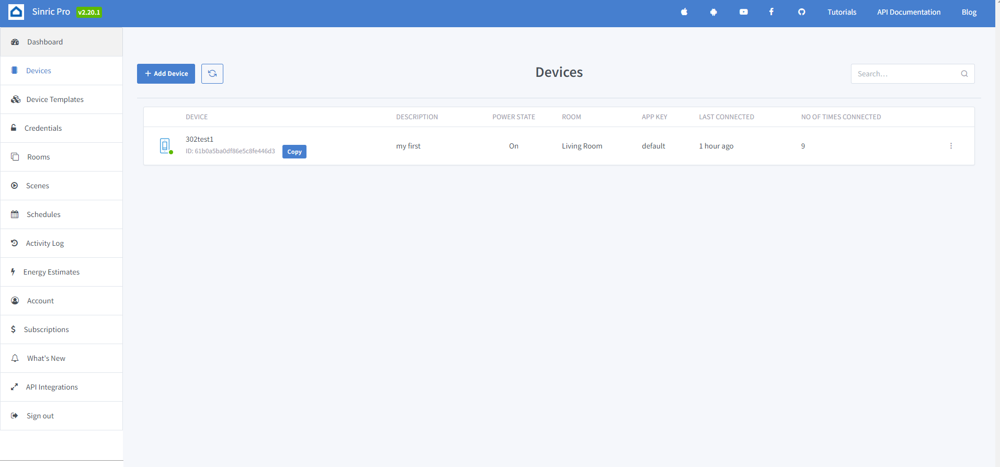注册完成后，到Sinric Pro官网里的控制台页面，进入 Devices 新建一个设备，这里的设置流程官方入门文档讲的很透彻了，我比较懒，你们自己看看好不好
不过要注意的一点是他最后注册完设备生成的三元组，你好像是无法重复获取的，也就是说如果你忘记了，要重新进入它的 Edit 选项设置一次才能重新生成一个给你，我的建议是直接找个TXT文档保存好，比较贵重。
接下来我们在弄一下硬件就好了
可以去 Github 拿 Sinric Pro 官方的SDK，里面有esp8266和esp32的Arduino IDE例程，当然别忘了在Arduino IDE里面的库管理器里面安装 SinricPro 库文件
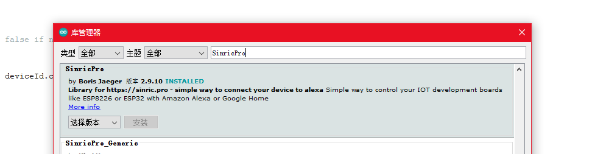下载好官方的SDK，直接找到例程里面的Switch例程双击打开
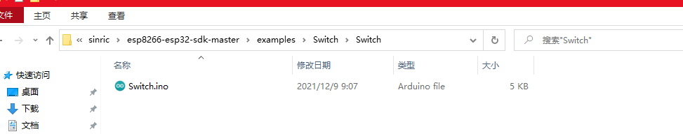#define Rpin 4
#define Gpin 5
#define Bpin 16
#ifdef ENABLE_DEBUG
#define DEBUG_ESP_PORT Serial
#define NODEBUG_WEBSOCKETS
#define NDEBUG
#endif
#include <Arduino.h>
#ifdef ESP8266
#include <ESP8266WiFi.h>
#endif
#ifdef ESP32
#include <WiFi.h>
#endif
#include "SinricPro.h"
#include "SinricProSwitch.h"
#define WIFI_SSID "IOT_FIRE"
#define WIFI_PASS "IOT666666"
#define APP_KEY "xxxxxxxxxxxxxx"
#define APP_SECRET "xxxxxxx"
#define SWITCH_ID "xxxxxxxxxxx"
#define BAUD_RATE 9600
bool myPowerState = false;
unsigned long lastBtnPress = 0;
bool onPowerState(const String &deviceId, bool &state) {
Serial.printf("Device %s turned %s (via SinricPro) \r\n", deviceId.c_str(), state?"on":"off");
myPowerState = state;
digitalWrite(Rpin, myPowerState?HIGH:LOW);
return true; // request handled properly
}
// setup function for WiFi connection
void setupWiFi() {
Serial.printf("\r\n[Wifi]: Connecting");
WiFi.begin(WIFI_SSID, WIFI_PASS);
while (WiFi.status() != WL_CONNECTED) {
Serial.printf(".");
delay(250);
}
Serial.printf("connected!\r\n[WiFi]: IP-Address is %s\r\n", WiFi.localIP().toString().c_str());
}
// setup function for SinricPro
void setupSinricPro() {
// add device to SinricPro
SinricProSwitch& mySwitch = SinricPro[SWITCH_ID];
// set callback function to device
mySwitch.onPowerState(onPowerState);
// setup SinricPro
SinricPro.onConnected([](){ Serial.printf("Connected to SinricPro\r\n"); });
SinricPro.onDisconnected([](){ Serial.printf("Disconnected from SinricPro\r\n"); });
//SinricPro.restoreDeviceStates(true); // Uncomment to restore the last known state from the server.
SinricPro.begin(APP_KEY, APP_SECRET);
}
// main setup function
void setup() {
pinMode(Rpin, OUTPUT);
pinMode(Gpin, OUTPUT);
pinMode(Bpin, OUTPUT);
Serial.begin(BAUD_RATE); Serial.printf("\r\n\r\n");
setupWiFi();
setupSinricPro();
}
void loop() {
handleButtonPress();
SinricPro.handle();
}
把三元组和自己的Wifi信息填进去，烧录一下，等待你的Esp8266连接到Sinric Pro服务。
如果连接成功了，那么你手机Alexa app会跳提示的，你的Esp8266直接就在Alexa app的 devices里面出现了。
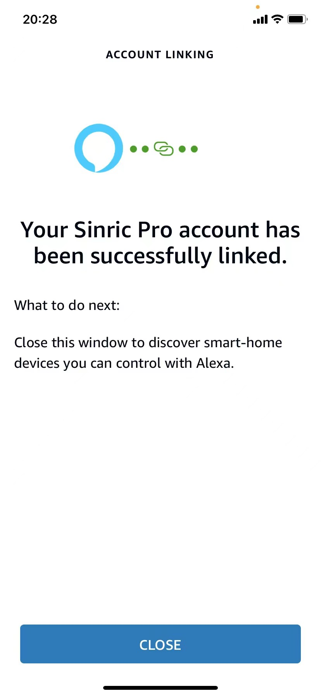芜湖！连接成功啦
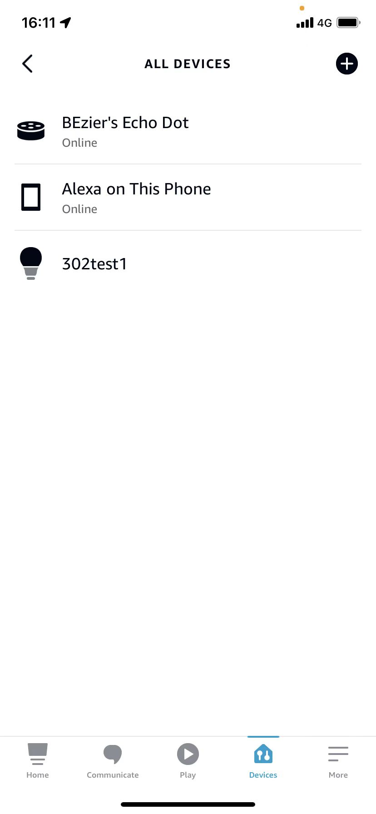我们可以给这个设备自定义语句，就像天猫精灵一样。我们直接点击你的设备，进入到控制页面，再点击”Create a Routine“来新建一个自定义语句
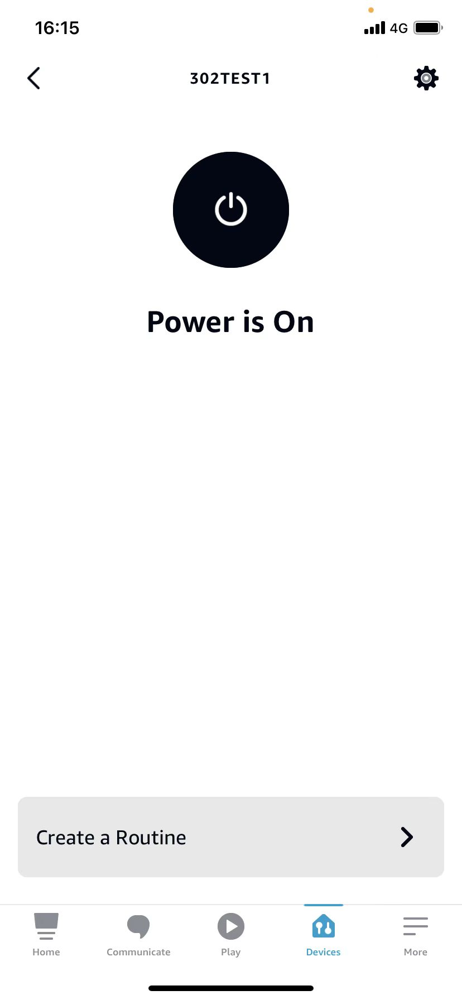 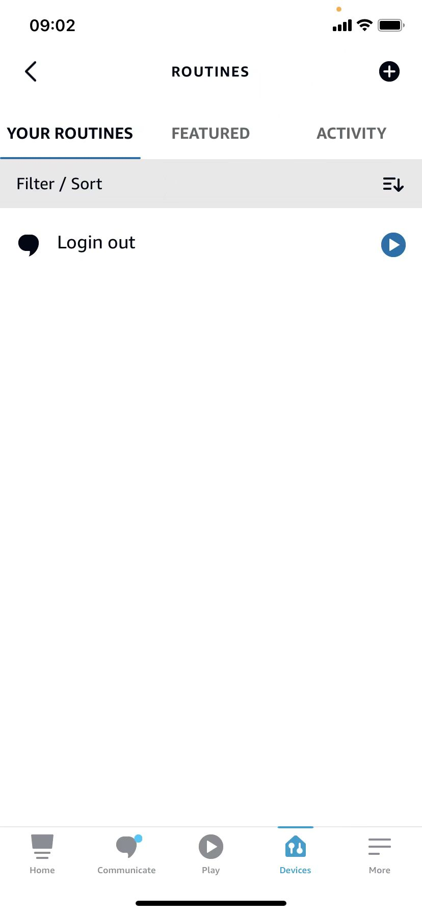直接右上角点击一下+号就好了
设置一下”When this happens“就是唤醒语，在 “Add action“添加一个动作就好啦。后面的一些简单设置我就不细说了，毕竟这些英文都挺好看懂的，实在不会你可以翻译啊是吧。
最后我演示一下这个功能，还是不错的，我把唤醒词设成了桐姥爷的” Link Start! ‘’ 但是不知道为啥，有可能我是丈育吧，它识别不了我说的，只能添加了几个相似音的增加一下容错率。
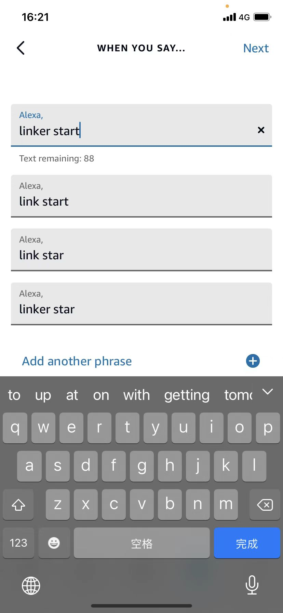不得不说，啊，这个Alexa英文的识别率还是吊锤天猫精灵的，听起来还是挺高大上的，平常用来练练口语是挺不错，不过就是这个连接网络的服务太Shit了，基本无解！毕竟是外网，我们自个玩玩没啥问题，如果真的要用在家里的话，为什么不直接上天猫精灵啊，我不能接受。
总结
其实没什么好说的，这玩意外观设计确实挺好看，还很小巧，就是音质拉了大胯，不过也不能怨它，毕竟也不是专业的音响。真有钱直接搞HomePod mini啊，这不是秒杀，干。不过呢他这个光环真的好看，建议国内友商抄一下啊，这不比整一个方块好是吧。